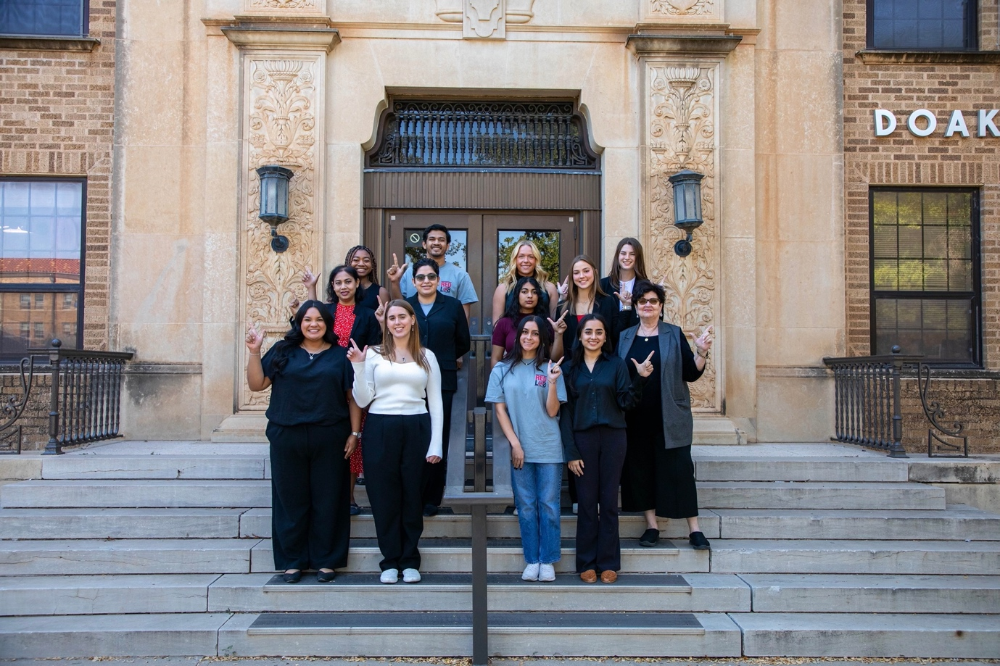
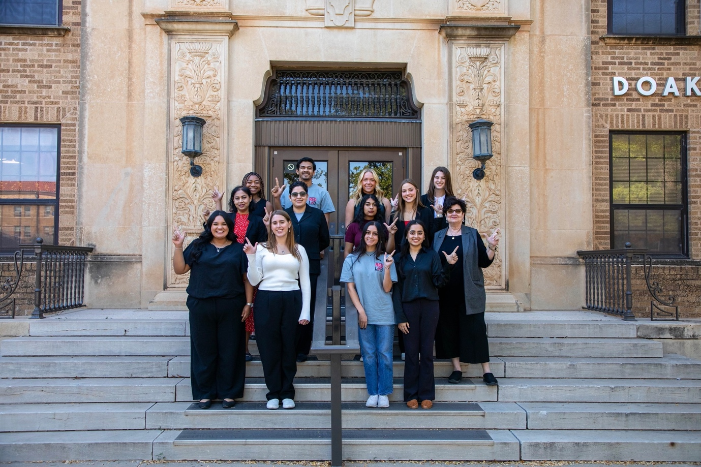
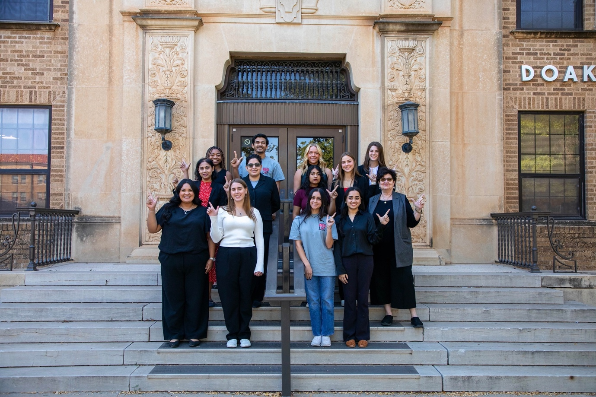

The INFORMS Student Chapter at Texas Tech is affiliated with INFORMS (Institute for Operations Research and Management Science),
the largest institute in the world for the professionals in the field of Operations Research, Management Sciences, and advanced analytics.

The INFORMS Student Chapter at Texas Tech aims to
Provide a community at GT for graduate and undergraduate students interested in OR, MS, Analytics, and Data Science;
Promote an integrated culture and communications among theoretical research and applications on OR, MS, Analytics, and Data Science;
Provide mentoring and career development opportunities for students;
Establish effective knowledge sharing platforms for inspiring emerging topics in OR/MS related fields.
The INFORMS Student Chapter at Texas Tech is in coordination with INFORMS, Texas Tech, and H. Milton Stewart School of Industrial and Systems Engineering.
We have members and serve students across a variety of undergraduate and graduate programs at GT,
including engineering, operations research, business, mathematics, and statistics.
 
